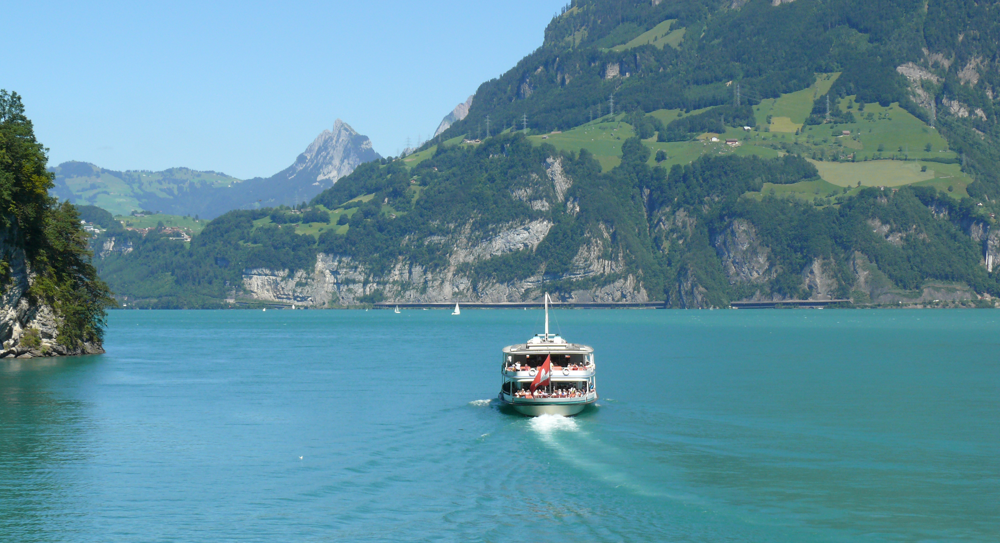
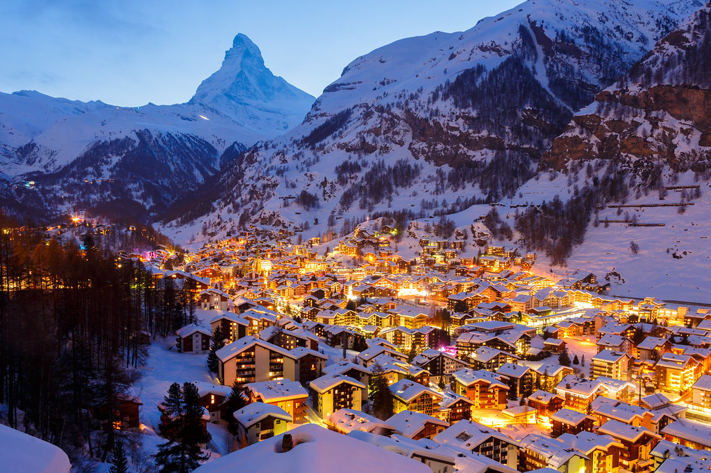
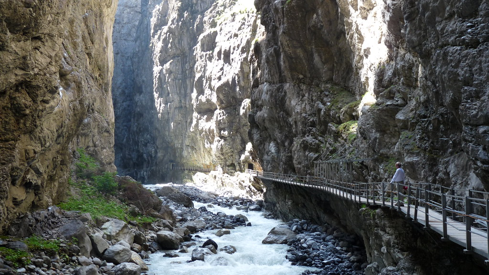

Switzerland is a stunning country in central Europe. They are known for their beautiful mountains and picturesque landscape. Switzerland has one of the best landscapes in the world. Because of this, skiing and snowboarding have become very popular. Banking and finance are key industries in the country. Swiss watches and chocolate are world renown. Look below for some more information on Switzerland!
|  |
Lake Lucerne is Switzerland’s fourth-largest lake. It is located in the center of the country. The lake is unusual because it has a very irregular shape, with many bends and turns and four arms. The shores of Lake Lucerne are partly formed by steep mountains. Sit back and enjoy the other-worldly views that this lake offers. |
|  |
At an altitude of around 3883 meters lies the highest ski area in Switzerland, the Matterhorn Ski Paradise. Not only is it located amongst the highest mountains of western Europe, but Zermatt also has the highest lifted piste terrain in Europe & is one of only two ski resorts with 365 day a year skiing. |
|  |
The history-rich Glacier Canyon in Grindelwald offers a unique sensory walk, combining the sights of exposed rock galleries with the sounds of rushing water. Explore the Glacier Canyon Grindelwald at Gletscherschlucht with a sensory walk through the canyon's naturally formed tunnels and rock galleries. |